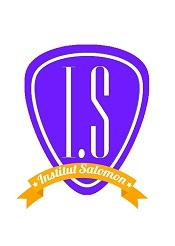
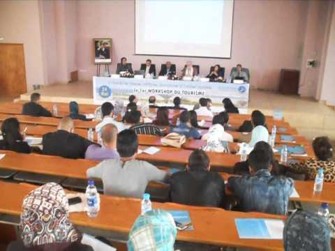
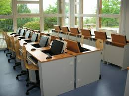

      <!--Contenu: Informations issues du coté droit de la page-->			
			<div class="col-xs-12 col-md-4 col-lg-3">
				<aside class="right-sidebar">
				
					<div class="widget wow bounceInDown" data-wow-offset="0" data-wow-delay="0.4s">
				
					<a href="#" title="1er Partenaire de reso-builders au cameroun">
					<h6>Notre Partenaire</h6></a>
				    </div>
				
				
				
				<div class="widget wow bounceInDown" data-wow-offset="0" data-wow-delay="0.4s">				
					<?php include 'configuration serveur/config_server.php';
					$result=$bdd->query('SELECT sujet_a_la_une FROM a_la_une');
					$donnee=$result->fetch();
					?>
					
                    <ul style="list-style: none">
					<li><a href="index.php" title="Flux d'informations"></a><i class="icon-angle-right"></i></li>
					<li class="active" title="Inscrivez-vous Ici"><?php echo $donnee['sujet_a_la_une'];?></li>
				    </ul>
					<?php
					     $result->closeCursor();
					?>
				</div>
				
				
				<div class="widget wow fadeInUp" data-wow-offset="0" data-wow-delay="0.4s">
				<div class="divider"></div><br/>
					
					<h6>le campus numérique de Reso-Builders & Business Academy </h6>est un réseau universitaire, avec plusieurs partenariats avec des universités internationales, spécialisé dans les enseignements par correspondance (e-learning system) à destination uniquement des adultes professionnels qui souhaitent étudier tout en conservant leur activité professionnelle et/ou préserver leur vie de famille.<br/>
				</div>
				
				<div class="divider"></div><br/>
				<ul class="nav nav-tabs wow bounceInDown" data-wow-offset="0" data-wow-delay="0.4s">
				
							<li class="active"><a href="#one" data-toggle="tab"><i class="icon-briefcase"></i> The Builders®</a></li>
							<li><a href="#three" data-toggle="tab">Ecole</a></li>
						</ul>
						<div class="tab-content wow bounceInDown" data-wow-offset="0" data-wow-delay="0.4s">
							<div class="tab-pane active" id="one">
								<p>
									<strong>The Builders® </strong>  est une association à but non lucratif, dotée d’une vision internationale, en partenariat avec plusieurs universités, les centres de formation, des sociétés et des organisations religieuses dans plusieurs continents.
								</p>
							</div>
							
							<div class="tab-pane" id="three">
								<p>Notre vision est d’équiper la jeunesse africaine en lui octroyant des formations professionnelles et académiques gratuites. </p>
							</div>
						</div>
				
				
				</aside>
			</div>